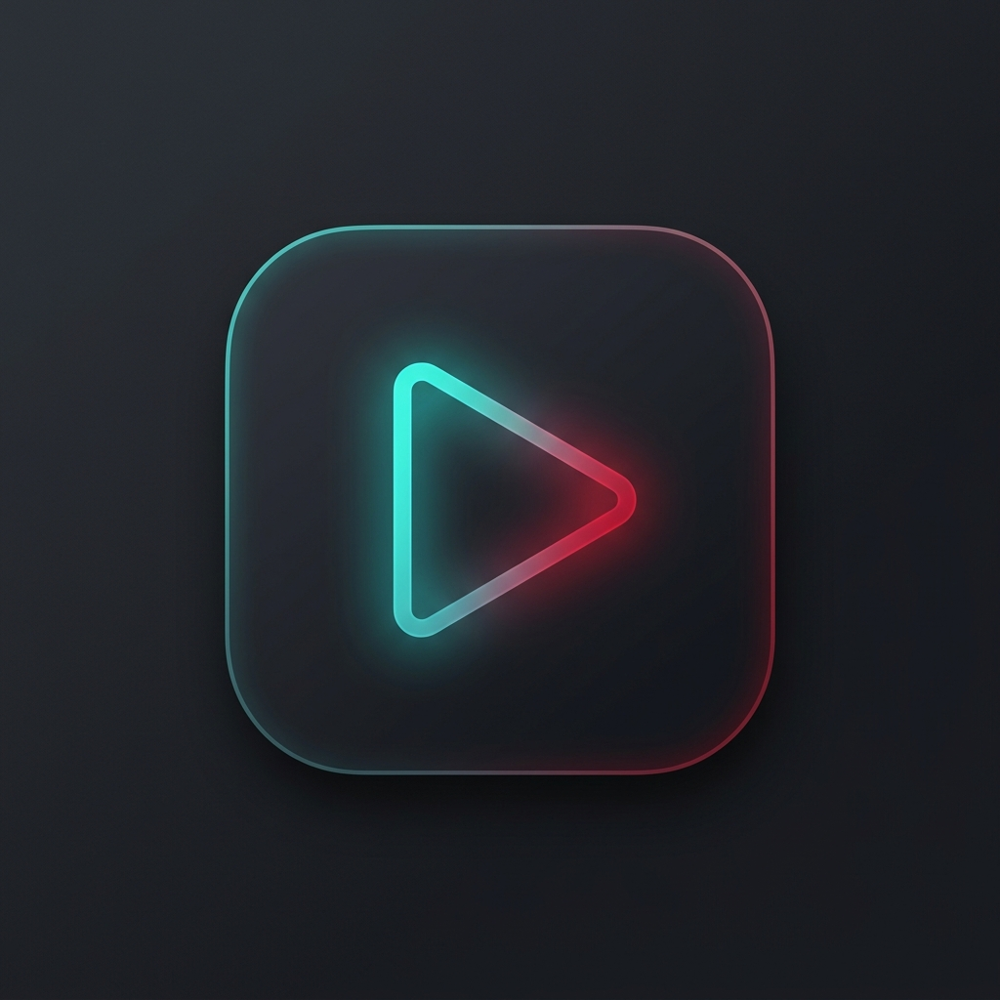

LocalVanced
YT
OFFLINE
✕
/
📁 Add Folder
🎞️ Add Files
💾 Backup
📥 Restore
🗑️ Reset
🌓 Theme
All
Videos
Audio
Continue Watching
Unwatched
< 5 mins
5 - 20 mins
> 20 mins
Newest Added
Oldest Added
Title (A - Z)
Title (Z - A)
Duration (Longest)
Duration (Shortest)
File Size (Largest)
← Back to Browse
0:00
▶
⏮
⏭
↺10
10↻
🔊
0:00 / 0:00
0.25x
0.5x
0.75x
1.0x (Normal)
1.25x
1.5x
1.75x
2.0x
🔁
📺
⛶
Video Title
Channel • File size • Duration
💬 Subtitles
🏷️ Tags
⭐ Favorite
➕ Add to Playlist
📂 Open Folder
📌 Timestamped Notes & Bookmarks
💾 Export (.txt)
+ Add at Current Time
📁 Folder
📋 Playlist
⏳ Queue
0
📌 Notes
Same Folder
0 videos
Up Next in Queue
Clear All
Timestamped Notes
💾 Export
+ Note
↗
Playing Video
Channel Name
☆
🔀
⏮
▶
⏭
🔁
0:00
0:00
0.5x
0.75x
1.0x
1.25x
1.5x
2.0x
🔊
↗
✕
/
Search
Space
Play/Pause
←
→
±10s
F
Fullscreen
Ctrl+D
Debug
Esc
Back
●
LocalVancedYT Diagnostics & Activity Console
Clear
✕ Close (Ctrl+D)